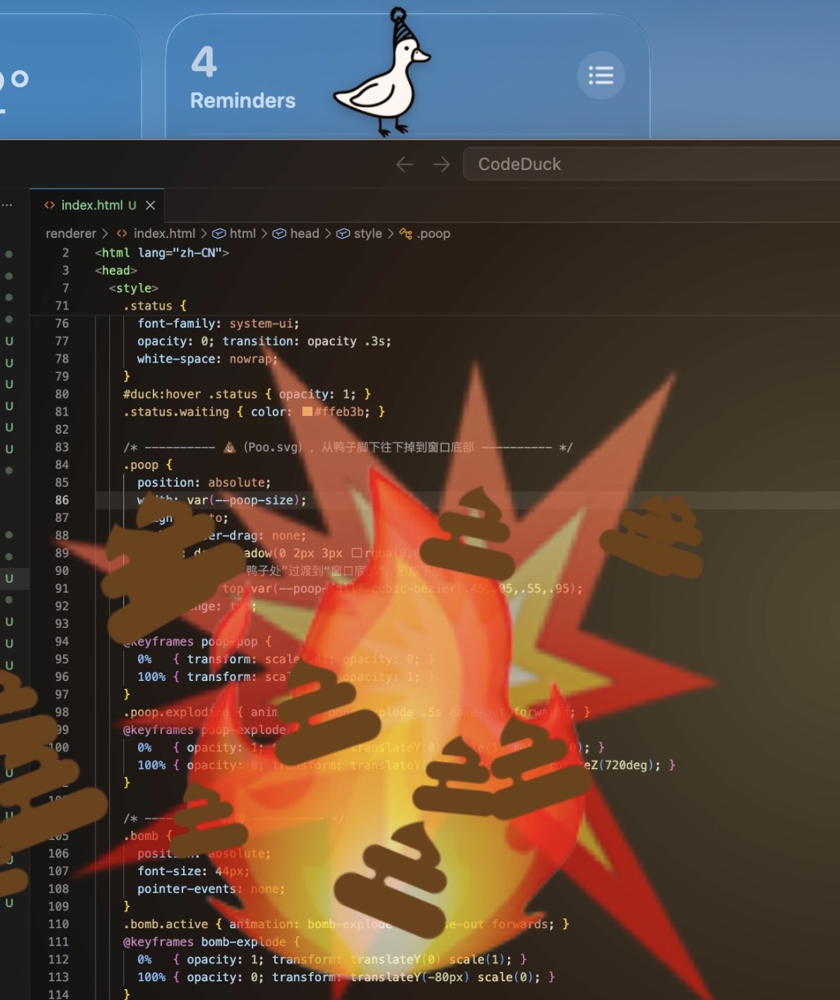

It perches on top of your VS Code window and keeps an eye on Claude Code: walks while Claude works, poops 💩 when it's waiting on you, and blows it all up 💥 the moment you reply.

Claude is running — the duck walks left to right
Needs your approval or answer — it stops, poops, and quacks
You reply, and a bomb blasts the poop away
Turn finished — one happy quack
xattr -cr /Applications/QuackCode.app in Terminal